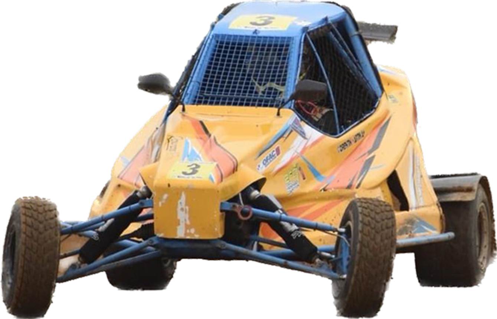

Bienvenue sur notre dossier de partenariat 2023 !
A travers ces quelques pages, nous allons nous présenter, vous parler de notre discipline et surtout vous transmettre notre passion !
Prêts à démarrer l'aventure ?

Bienvenue sur notre dossier de partenariat 2023 !
A travers ces quelques pages, nous allons nous présenter, vous parler de notre discipline et surtout vous transmettre notre passion !
Prêts à démarrer l'aventure ?
MC-Compétition est une association loi 1901 soutenant Corentin MARTIN, pilote en Coupe de France de Sprint Car.
Avant d'entrer dans les détails, voici un aperçu de son palmarès en compétition :
.
Avant d’entrer dans des détails techniques, voici un bref aperçu de ce qu’est l’Autocross/Sprint Car : Imaginez 15 véhicules ensemble sur une même grille de départ, prêts à bondir de leur emplacement dès l’allumage du feu vert avant d’entamer une lutte intense durant 5 tours sur un circuit en terre d’un kilomètre de long. Plaisant n’est-ce pas ? Bienvenue dans notre univers !
Les compétitions sont organisées sous l’égide de la Fédération Française du Sport Automobile (FFSA) avec l’appui de l’Organisation Française de l’Autocross et du Sprint Car (OFAC) et les règles de sécurité sont édictées par la Fédération Internationale de l’Automobile (FIA).
9 catégories différentes sont sur les circuits chaque week-end : 5 en Autocross (Des voitures de tourisme aux buggys 4 roues motrices) et 4 en Sprint Car (Junior Sprint pour les 12/18 ans, Sprint Girls catégorie 100% féminine, Maxi Sprint et Super Sprint).
Notre catégorie est la Maxi Sprint : un Sprint Car de 315 kgs propulsé par un moteur Kawasaki ER6N de 95 chevaux (soit un rapport poids/puissance équivalent à une voiture de 300 chevaux pour 1000 kgs ). Chaque week-end, 26 pilotes sont engagés dans cette catégorie.
.
Jusqu’à maintenant, nous roulions avec notre propre véhicule.
Ces trois dernières saisons, c’était un Sprint Car de marque ROSCROSS, fabriqué dans le Morbihan (56), équipé d’amortisseurs Ohlins et d’un moteur de Kawasaki ER6-N optimisé pour la compétition.
Bien que cette solution d’être propriétaire de son véhicule permette d’être performant, elle n’apparait plus forcément comme l’équation idéale pour réussir.
Le niveau de compétitivité et d’éxigence grimpant de saison en saison, la préparation, l’entretien et le suivi du véhicule à l’inter-saison, entre les épreuves et sur les épreuves demandent de plus en plus de temps et de connaissances et il devient difficile pour une petite structure comme la notre de rester au top.
.
C’est pourquoi, à partir de la saison 2023, Corentin intégrera une équipe : Polycar Concept Sport, basée à Lurcy-Lévis dans l’Allier (03) et constructeur des chassis GR TECH.
Toute la saison, un staff dédié gérera l’entretien, l’assistance et les réglages du Sprint Car et Corentin pourra partager et échanger son ressenti avec les autres pilotes de l’équipe.
Le professionnalisme de la structure se traduit par d’excellents résultats sur la piste : en 2022, Polycar Concept Sport a terminé vice-champion de France dans les catégories Junior Sprint et Maxi Sprint.
Corentin a déjà eu l’occasion de découvrir le GR TECH cette saison sur une épreuve de challenge régional et a pu percevoir tout son potentiel !
De mars à octobre, le championnat de France de Sprint Car compte 10 épreuves réparties à travers tout le pays (voir page suivante).
D’années en années, la visibilité du championnat s’accroit et attire de plus en plus de public. Désormais, les épreuves sont diffusées en direct sur Youtube avec une qualité professionnelle (4 caméras, affichage des classements en temps réel, replays des plus belles actions...). Chaque live de la saison a été vu en direct ou en replay par entre 20 000 et 51 000 spectateurs !

Notre page Facebook (MC-COMPETITION) est suivie par plus de 2000 personnes, celle de l’OFAC (le promoteur du championnat) compte 10 000 fans et certains groupes Facebook relayant l’actualité de l’Autocross et du Sprint Car dépassent la barre des 15 000 membres !
N'hésitez pas à cliquer sur les différents liens ci-dessus pour découvrir ces pages plus en détails !
.
Des milliers de kilomètres sur les routes de France au programme, de la Bretagne aux Pyrénées en passant par l’Alsace ou la Gironde, une saison du championat de France est une grande aventure à vivre !
.
Même si le Sprint Car reste une discipline relativement “abordable” financièrement lorsqu'on la compare avec d’autres catégories automobiles, elle demande tout de même un investissement financier important.
La partie la plus importante du budget est celle de la location et l’entretien du véhicule chez Polycar Concept Sport ainsi que d’éventuelles casses au cours de la saison (11 000€).
Le deuxième poste de dépense est l’engagement sur chacune des 10 épreuves de la saison (10x 180€ soit un total de 1800€).
Parmi les dépenses à effectuer cet hiver, nous devons acheter une nouvelle combinaison et un nouveau casque, ceux que nous utilisions jusqu’à maintenant étant arrivés en fin d’homologation (1000€).
Pour avoir le droit de rouler, il faut prendre une licence FFSA (271€).
Enfin, il faut également ajouter les frais de déplacement pour le pilote et l'équipe (non compris dans le graphique).
.
De notre côté, chaque aide est précieuse et nous permettra d’être dans les meilleures conditions pour atteindre notre objectif de devenir champion de France.
De votre côté, le sponsoring vous permettra :
A SAVOIR : Les dépenses de sponsoring sont déductibles du résultat imposable de votre société : 60% du don dans la limite de 0,5% du chiffre d’affaires HT.
Selon vos envies et votre budget, plusieurs solutions sont possibles :
N’hésitez pas à nous contacter pour en savoir plus !
.
CORENTIN
"Le pilote"
Président de l'association MC-Compétition
07.89.49.78.72

JOSE
"Le papa"
Trésorier de l'association MC-Compétition
06.37.09.54.26
.
Merci d'avoir pris le temps de parcourir ce dossier !
Nous espérons vous avoir donné envie de partager cette aventure avec nous !
Pour toutes questions, n'hésitez pas à nous contacter !
Si vous le voulez, vous pouvez maintenant découvrir quelques vidéos de la saison passée.
Pour terminer, nous vous laissons découvrir le modèle 3D du tout nouveau chassis GR TECH que pilotera Corentin pour cette saison 2023 !